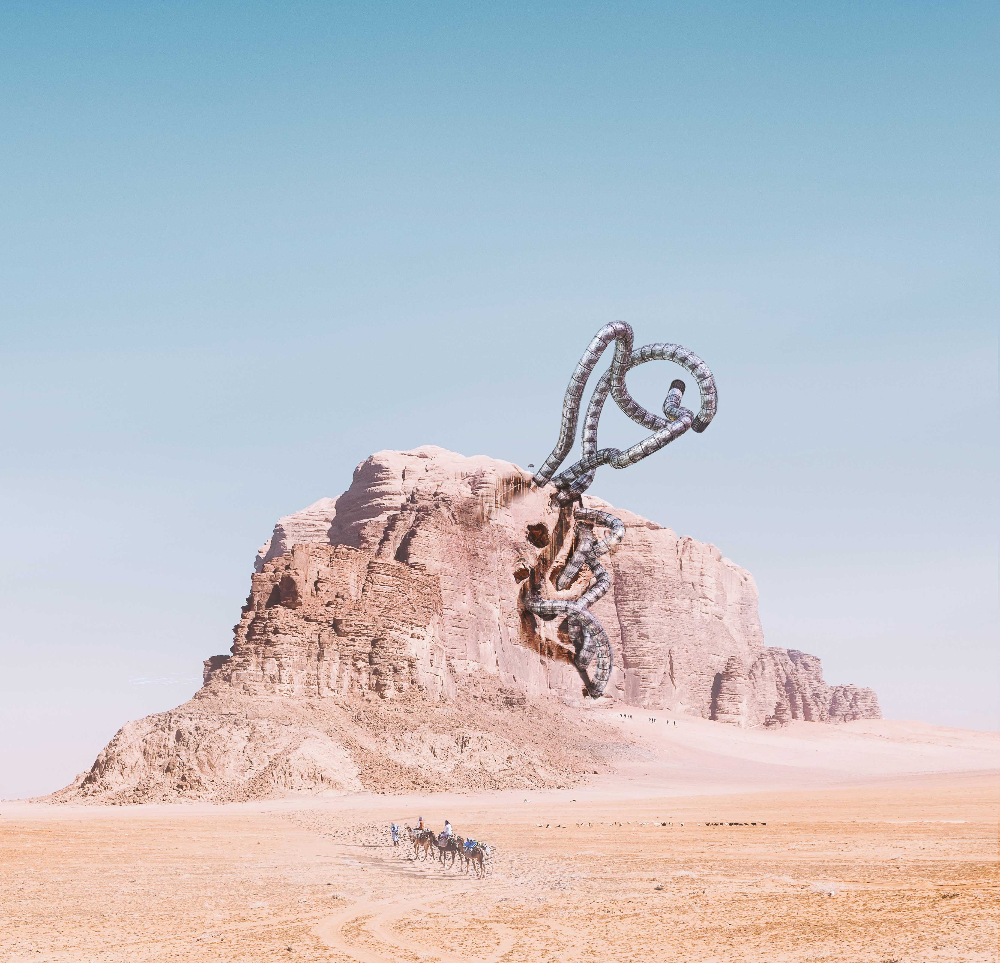

Neo Classical Kitchen
Kitchen | Commission
Challenging the boundaries of what a skyscraper is or should be, in terms of either its form or function. Seeking to rethink the notion of fixed vertical structures presented as monolithic monuments, existing independently from there context as is often the case, into a more fluid, tactile design approach that is in itself, still is a narrative of intervention on the prevailing context as its predecessor, yet doesn’t super impose its existence on it nor seeks to disconnect from it. Establishing a Symbiotic relationship that is codependent on its surrounding context in order to truly exist.